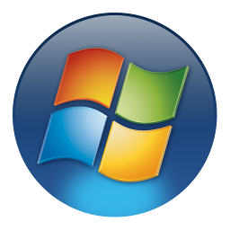

Game Backup Monitor is a simple, but flexible application that detects games as you play them. Once you finish playing a game, a backup of the saved games will be made automatically using 7-Zip compression. GBM can be used on a single computer, or on multiple computers to effectively add cloud support to any game or application.
Game Backup Monitor was designed with gaming in mind, but it can be used to monitor any application on your PC!
Game Backup Monitor is completely free and open source software.
Game Backup Monitor is currently only available in English.
- Backup your saves automatically and immediately after playing a game. No scheduling or input required!
- Track the hours that you've played any monitored game, similar to Steam. (Optional)
- Backup to a cloud folder and add cloud save support to any game.
- GBM can detect and backup games running on DOSBox, ScummVM or Wine.
- A growing list of pre-configured games for Windows and Linux.
- Easily setup an unlimited number of games to monitor, each with their own specific settings.
- Game settings are designed to be easily portable and shared.
Verified Operating Systems:
Windows 10, Ubuntu 18.04 / 16.04
These operating systems are tested during development.
Supported Operating Systems:
Windows 8, Windows 7, Windows Vista SP1, Windows XP SP3, Linux
These operating systems are supported, but are NOT tested during development.
Recommended Minimum:
Pentium 1 GHz or higher with 512 MB RAM or more
Disk Space:
2 - 3 MB (Not including prerequisites)
Windows 7 or older requires the .NET 4 (Client Profile)
Linux users, please read the FAQ for package requirements and installation instrutions.